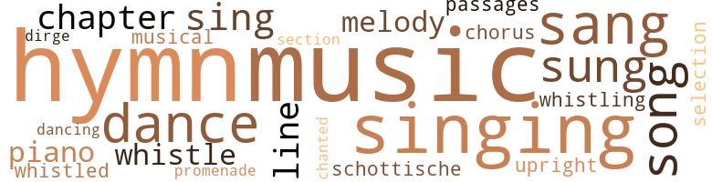
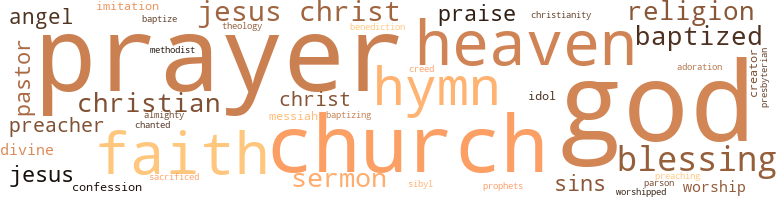

Megda, by Kelly, Emma Dunham (1891)
123 music-related terms matched in this text.
Most frequent terms in this topic: music (19); hymn (17); singing (16); sang (10); dance (9)
chapter.n.01
Definition: a subdivision of a written work; usually numbered and titled
| word | sentence |
|---|---|
| chapter | The text Mr. Stanley chose was from the seventh chapter of St. Matthew , the seventh and eighth verses . |
| chapter | Dell Manton will remain Dell Manton to the end of the chapter ; that girl is true blue - no deceit about her . |
| chapter | LAURIE came over to Meg 's house on the morning of the eighteenth , about a week after the events recorded in our last chapter . |
| chapter | AS Mrs. Randal and her little family were about finishing their evening meal on the day following the events recorded in our last chapter , the door-bell rang . |
chorus.n.01
Definition: any utterance produced simultaneously by a group
| word | sentence |
|---|---|
| chorus | Then she struck the opening chords and the young voices burst forth in melody , Meg 's clear , sweet notes ringing out above all the others in the chorus : " Then Forgive and Forget , for this life is too fleeting , " etc . |
dance.n.01
Definition: an artistic form of nonverbal communication
| word | sentence |
|---|---|
| dance | She went to the door and watched May a moment , keeping time to the dance with her hands , then her feet commenced to keep the time , too , and when May came around to where she was standing , Meg slipped her arm around her waist , and down the long hall they went lightly and gracefully . |
| dance | One by one the girls dropped their books into their laps , and watched , with dreamy eyes , the shadows , as they came from their hiding places and commenced their twilight dance on ceiling , walls and doors . |
| dance | Then he saw the little foot resting on the floor , commence to go up and down , up and down , in perfect time with the music ; then her head commenced to move slowly backward and forward , and from side to side , and before the delicious music had ceased , Meg was performing quite a dance on her own account in the deep , wide window-seat . |
| dance | Her cheeks flushed , her eyes shone , her heart beat quickly Before the first figure was finished , she was almost wild to get up and take part in the intricate mazes of the dance . |
| dance | She kept time with the music softly with her hands and feet , and when the dance was over , and Ray led Dell to a seat beside her , Meg greeted them with , " What perfect music ! " |
| dance | The gentlemen coaxed and pleaded that they would stay " just one hour longer " - " just one dance more , " but the girls were inexorable . |
dance.v.03
Definition: skip, leap, or move up and down or sideways
| word | sentence |
|---|---|
| dance | Now you know , the Church thinks it wrong to dance , and play whist , and go to the theater . |
| dance | Whist I do not care so much about , I can give that up ; but oh , Laurie , I do love to dance , and I do love the theater . |
| dance | So she smilingly declined Ray 's request that she should dance the Lanciers with him , on the plea that she wanted to watch the others a while . |
| dancing | Meg 's eyes were dancing now . |
dirge.n.01
Definition: a song or hymn of mourning composed or performed as a memorial to a dead person
| word | sentence |
|---|---|
| dirge | It seems to me that those words should be set to the music of a dirge - never to be spoken , but always to be chanted . " |
excerpt.n.01
Definition: a passage selected from a larger work
| word | sentence |
|---|---|
| selection | She had chosen for her first selection " The Polish Boy , " by " Mrs. Ann S. Stephens . " |
hymn.n.01
Definition: a song of praise (to God or to a saint or to a nation)
| word | sentence |
|---|---|
| hymn | Then followed the hymn : " Come Near Me , O My Saviour . " |
| hymn | Mr. Stanley little thought the way in which the beautiful words of the hymn and his manner of rendering them were being received by one fair member of his congregation - As he finished , he looked at Meg and noticed the look of deep admiration on her fair , lifted face , but mistook it for one of reverent feeling for the words he had read . |
| hymn | He said nothing to her during the remainder of the exercises , but when the closing hymn was given out , he found the place and offered to share his book with her . |
| hymn | The hymn was " Come , " in number three . |
| hymn | The expression of his face caused a little smile to play around her lips , and she threw all the beautiful pathos her voice was possessed of into the remainder of the hymn . |
| hymn | At the close of the prayer , the hymn , " I Hear Thy Welcome Voice " was given out , and during the singing of the first line , our young people walked quietly into the room and took seats together . |
| hymn | The rest joined her on the second line , and the grand old hymn seemed to draw each one nearer to the feet of their Lord . |
| hymn | They went through the halls and up the stairs now , singing as in former days , only now it was some hymn , instead of a light love-ballad . |
| hymn | It had been their wish that Meg , Dell , Will and Ed should sing the hymn each one had chosen . |
| hymn | " Nonsense , " replied Dell , finding the first hymn with the calmest face imaginable . |
| hymn | " I hear Thy gentle voice , " was the hymn that Elsie had chosen , and very sweetly they sang it ! |
| hymn | Laurie had chosen for her hymn , " Take me as I ' am . " |
| hymn | Ethel had chosen the beautiful hymn , so old and yet ever new , " Jesus , Lover of my Soul . " |
| hymns | Many testimonies were given , and several hymns sung . |
| hymn | One or two pages turned softly as if some one was seeking a hymn . |
| hymn | The first hymn that Meg had chosen was , " Just as I am , without one plea . " |
| hymn | For months and years afterward , whenever Meg heard that hymn , she seemed to feel again the baptismal waters close over her ; the deep , blessed feeling of rest and peace , joy and happiness . |
| hymn | She said once , " If I were ever tempted to go astray , and I should hear that hymn - either played or sung - it would save me . " |
music.n.01
Definition: an artistic form of auditory communication incorporating instrumental or vocal tones in a structured and continuous manner
| word | sentence |
|---|---|
| music | We 'll not be the only ones to go in to slow music . " |
| music | Mr. Stanley did not sing , but he was passionately fond of music . |
| music | Dell was supremely unconscious of his rapturous glances , her mind as well as her eyes , being on her music , but they afforded unbounded amusement to Melvin Pierce , Bert Marston and Hal , who were looking at him through a hole in the curtain . |
| music | He spoke on ordinary topics - her school , her studies , her music , and lastly , her elocution . |
| music | There was no music in the singing after that ; nothing that was said touched her heart , not even Ruth 's pathetic little prayer when she spoke of herself as being " the vilest of those who love Him , and the weakest of those who pray . " |
| music | The band-stand was just far enough away for the music to sound delightful , and the electric light flooded the room with its soft , moon-like radiance . |
| music | " How she loves that kind of music , " thought Mr. Stanley , still watching her . |
| music | Then he saw the little foot resting on the floor , commence to go up and down , up and down , in perfect time with the music ; then her head commenced to move slowly backward and forward , and from side to side , and before the delicious music had ceased , Meg was performing quite a dance on her own account in the deep , wide window-seat . |
| music | Then he saw the little foot resting on the floor , commence to go up and down , up and down , in perfect time with the music ; then her head commenced to move slowly backward and forward , and from side to side , and before the delicious music had ceased , Meg was performing quite a dance on her own account in the deep , wide window-seat . |
| music | The president began : " As is doubtless known by all , the society have decided to give an entertainment in the hall above , consisting of music , both vocal and instrumental , readings and a scene from ' Hamlet . ' |
| music | But when the first , clear , beautiful strains of music burst upon the air , Meg felt herself tremble all over . |
| music | She kept time with the music softly with her hands and feet , and when the dance was over , and Ray led Dell to a seat beside her , Meg greeted them with , " What perfect music ! " |
| music | She kept time with the music softly with her hands and feet , and when the dance was over , and Ray led Dell to a seat beside her , Meg greeted them with , " What perfect music ! " |
| music | The music commenced - soft , dreamy , intoxicating - " Flowers of St. Petersburg . " |
| music | The music entered her whole being , and took entire possession . |
| music | At last the low , sweet notes of the organ rise , fall and tremble on the air ; then a louder burst of joyous music , as the organist breaks forth into " Beautiful Bride 's Wedding March , " then the Rev. Arthur Norman Stanley , accompanied by the Rev. Percy Leon Nordre , of Brooklyn , comes from the room on the left , and the handsome , faultlessly-dressed bridegroom from the room on the right . |
| music | The bridal party moved slowly up the aisle ; the groom left the chancel and came to meet his bride ; and then , with the low , soft notes of the organ breathing out sweet music , Maude Leonard and Augustus Belmont were made man and wife . |
| music | There was music - vocal and instrumental - promenading through the beautiful rooms ; laughter , talk and - refreshments . |
| music | It seems to me that those words should be set to the music of a dirge - never to be spoken , but always to be chanted . " |
musical.n.01
Definition: a play or film whose action and dialogue is interspersed with singing and dancing
| word | sentence |
|---|---|
| musical | deep , thrilling and musical . |
passage.n.06
Definition: a short section of a musical composition
| word | sentence |
|---|---|
| passages | " O , row me o'er , O , boat me o'er , O , row me o'er wi ' Charlie , " May Bromley sang at the top of her voice , as she flew along the passages and up three flights of stairs to the " seniors ' parlor . " |
piano.n.01
Definition: a keyboard instrument that is played by depressing keys that cause hammers to strike tuned strings and produce sounds
| word | sentence |
|---|---|
| piano | The first selection on the programme was a piano duet by " Miss Manton " and " Miss Randal . " |
| piano | Dell went forward and took her seat at the piano with her cool , matter-of-fact air . |
| piano | Meg seated herself at the piano . |
promenade.n.01
Definition: a formal ball held for a school class toward the end of the academic year
| word | sentence |
|---|---|
| promenade | Between three and four o'clock they took a promenade , sometimes in one place , and sometimes in another . |
schottische.n.01
Definition: music performed for dancing the schottische
| word | sentence |
|---|---|
| schottische | We have just ten minutes before that heartless bell rings ; come out here and try the ' Military schottische ' ; the floor is in fine condition - so is my whistle . |
section.n.01
Definition: a self-contained part of a larger composition (written or musical)
| word | sentence |
|---|---|
| section | The place of baptism was the most beautiful spot in that section of the country . |
sing.v.02
Definition: produce tones with the voice
| word | sentence |
|---|---|
| singing | Meg did not venture another look until she was standing with the others singing the " Doxology . " |
| sing | Mr. Stanley did not sing , but he was passionately fond of music . |
| sing | Meg did not intend to sing when she stood up , but it was as natural for her to sing as it was to breathe , and before the first verse was finished , her sweet , clear voice was ringing out high above the others . |
| sing | Meg did not intend to sing when she stood up , but it was as natural for her to sing as it was to breathe , and before the first verse was finished , her sweet , clear voice was ringing out high above the others . |
| sang | A clear , girlish voice sang : " Little Fisher-maiden , Skies with storms are laden ; ' Tempt no more across the sea , . |
| sang | Ed had a good voice , and his rendering of the difficult piece was good - remarkably so ; but the effect was somewhat spoiled by his turning his eyes in quite a love-sick fashion on Dell , every time he sang , " Ere I cease to love thee , my Queen , my Queen . " |
| sang | Dell sang " Calvary , " and sung it gloriously . |
| sung | Dell sang " Calvary , " and sung it gloriously . |
| sung | sung a voice in the lower hall . |
| sing | " We will pray for you , earnestly and gladly , " said Ethel , her voice quivering with happiness ; then she commenced to sing , " Jesus , Lover of my Soul . " |
| sang | I did n't think much of it then , but perhaps " - " And a lady I 'll surely be , " sang a voice . |
| sing | It had been their wish that Meg , Dell , Will and Ed should sing the hymn each one had chosen . |
| sang | " I hear Thy gentle voice , " was the hymn that Elsie had chosen , and very sweetly they sang it ! |
| sung | Many testimonies were given , and several hymns sung . |
| sung | Before she had sung three words , the whole room took it up , Meg 's voice ringing out above all the others . |
| sang | " O , row me o'er , O , boat me o'er , O , row me o'er wi ' Charlie , " May Bromley sang at the top of her voice , as she flew along the passages and up three flights of stairs to the " seniors ' parlor . " |
| sung | Then the Class-Song was sung , in low , sweet , girlish voices , and the last , happy , careless school-day that they would ever know , was at an end : CLASS-SONG . |
| sang | But that was the way Dell always sang . |
| sung | Oh , how they sung it ! |
| sang | At first Meg stood with her eyes cast down , but before the second line was finished , she lifted her face to the blue sky , and sang with them out of the very fullness of her heart . |
| sung | She said once , " If I were ever tempted to go astray , and I should hear that hymn - either played or sung - it would save me . " |
| sung | To die on her wedding-day , and just one year from the day on which they had all sat together in the dear " study " , the day before graduating day , and talked together lovingly and earnestly , and sung the " Class Song " with clasped hands . |
| sang | The " class " had stood together around the open casket at the grave , and as they sang sadly and tearfully , " Asleep in Jesus , blessed sleep , " dropped each a white hyacinth ( Ethel 's favorite flower ) on the lovely form . |
| sang | The table stood ready , the fire burned brightly on the hearth , the tea-kettle sang cheerily on the hob ; eight o'clock sounded - muffled and made indistinct by the rising storm . |
singing.n.01
Definition: the act of singing vocal music
| word | sentence |
|---|---|
| singing | Somehow his face , or the expression it wore , fascinated Meg , and she kept her eyes upon it , even after the singing ceased , and the young minister , lifting his hand , said in a deep , solemn voice , " Let us pray . " |
| singing | She stole a glance at Mr. Stanley to see how her singing was impressing him . |
| singing | At the close of the prayer , the hymn , " I Hear Thy Welcome Voice " was given out , and during the singing of the first line , our young people walked quietly into the room and took seats together . |
| singing | In the singing of the second verse their voices rang out , clear and full . |
| singing | It seemed as if he had caught inspiration from the glorious singing of a moment before . |
| singing | After the prayer , Ethel said , in a few simple words , that the meeting was open to all ; all were invited to take part by speaking , singing or praying . |
| singing | There was no music in the singing after that ; nothing that was said touched her heart , not even Ruth 's pathetic little prayer when she spoke of herself as being " the vilest of those who love Him , and the weakest of those who pray . " |
| singing | Lill and Lulu came up the stairs , singing softly , " I 've found a Friend , oh , such a Friend . " |
| singing | They went through the halls and up the stairs now , singing as in former days , only now it was some hymn , instead of a light love-ballad . |
| singing | I have to play for the singing and be Secretary and Treasurer in one . |
| singing | He raised his hat , she bowed and went into the house , and before Mr. Stanley reached the corner of the street , he heard her beautiful voice through the open window singing : " My God and Father , while I stray Far from my home on life 's rough way , O , teach me from my heart to say , Thy will be done . " |
| singing | " Suppose we open our meeting by singing that good old song , ' Forgive and Forget ' , " said Mr. Duncan . |
| singing | As Meg was driven through the quiet streets that led to the river , not a sound disturbed the Sabbath stillness , but the singing of the birds in the trees , until the carriage entered the great gate that opened into the beautiful grove ; then the low hum of voices was heard from the crowd of people congregated under the trees , and on the banks of the river . |
| singing | We will bring the meeting to a close by singing , ' Merry hearts " What a splendid ' Lady Macbeth ' Meg will make , wo n't she ? " said faithful little Laurie to May , as they stood together for a moment , putting on their gossamers . |
| singing | "' They were silent - their hearts too full to speak ; but it seemed to them all , that the burden of every song the birds were singing , of every sigh of the wind among the branches , of every rustle of grass by the roadside , was an echo of the words that Meg had spoken - " Is n't God good . " |
song.n.01
Definition: a short musical composition with words
| word | sentence |
|---|---|
| song | The song Mr. Holmes had selected was " My Queen , " by " Blumenthal . " |
| song | It was the happiest time of day for them all , only always before , the dusky silence had been broken by spasmodic " talks " and laughter , or little snatches of low song . |
| song | One more song , and then we sever , One more touch of hands and then We must part , perhaps forever , ' Though we hope to meet again Life 's great school is now before us ' Though our training here may end May the same kind love be o'er us Wheresoe'er our ways may tend . |
| song | Sweet the mem ' ries that shall linger ' Round this dear , familiar place , Memories of song and singer , Thoughts which time can not efface ; Faithful friends and dear companions , All were known and loved so well ; Now has come the hour of parting , We must bid you all " Farewell . " |
| song | " Suppose we open our meeting by singing that good old song , ' Forgive and Forget ' , " said Mr. Duncan . |
| song | After the song the president said , " The secretary will please read the report of the last meeting . " |
| song | "' They were silent - their hearts too full to speak ; but it seemed to them all , that the burden of every song the birds were singing , of every sigh of the wind among the branches , of every rustle of grass by the roadside , was an echo of the words that Meg had spoken - " Is n't God good . " |
| song | Light feet came tripping up the stairs , the owner humming a gay little song . |
tone.v.01
Definition: utter monotonously and repetitively and rhythmically
| word | sentence |
|---|---|
| chanted | It seems to me that those words should be set to the music of a dirge - never to be spoken , but always to be chanted . " |
tune.n.01
Definition: a succession of notes forming a distinctive sequence
| word | sentence |
|---|---|
| line | At the close of the prayer , the hymn , " I Hear Thy Welcome Voice " was given out , and during the singing of the first line , our young people walked quietly into the room and took seats together . |
| line | The rest joined her on the second line , and the grand old hymn seemed to draw each one nearer to the feet of their Lord . |
| melody | Someone commenced softly , " Nearer , my God , to Thee ; " the rest took it up , and in a second the room was filled with the divine melody . |
| melody | To Meg it seemed as if the , room were full of angels , and the heavenly melody . |
| melody | Then she struck the opening chords and the young voices burst forth in melody , Meg 's clear , sweet notes ringing out above all the others in the chorus : " Then Forgive and Forget , for this life is too fleeting , " etc . |
| line | At first Meg stood with her eyes cast down , but before the second line was finished , she lifted her face to the blue sky , and sang with them out of the very fullness of her heart . |
| line | Her fair hair gleamed like gold underneath the misty bridal veil of costly lace ; her blue eyes shone softly ; her lips were like a scarlet line ; a lovely pink color was in her cheeks . |
upright.n.02
Definition: a piano with a vertical sounding board
| word | sentence |
|---|---|
| upright | " Are you crazy , May-flower ? " asked Meg , sitting upright on the sofa , where she had been lying with her hands up over her head for the last half-hour . |
whistle.v.01
Definition: make whistling sounds
| word | sentence |
|---|---|
| whistle | We have just ten minutes before that heartless bell rings ; come out here and try the ' Military schottische ' ; the floor is in fine condition - so is my whistle . |
| whistling | Meg opened her lips to say " No , " but just then May picked her skirts up daintily with both hands , and went skimming down the smooth , polished floor , whistling softly the " Nightingale Schottische . " |
| whistled | Before Meg could open her lips to speak a storm of applause burst forth , the younger part of the company even stamped with their feet and whistled . |
| whistle | Hal gave a low whistle , Mrs. Randal looked surprised , and even Elsie , who was always so quick to see one 's virtues before she saw their faults , looked incredulous . |
| whistle | Just then the whistle sounded , and the girls had barely time to gather up their " traps " before the train steamed into the station . |
78 violence-related terms matched in this text.
Most frequent terms in this topic: displeasure (7); hurt (6); drawn (4); anger (4); despise (4)
anger.n.01
Definition: a strong emotion; a feeling that is oriented toward some real or supposed grievance
| word | sentence |
|---|---|
| anger | Meg was so white with anger she could scarcely speak . |
| anger | If she trembled at all it was with anger . |
| anger | She experienced a feeling of regret not unmixed with anger , as she scanned the audience closely . |
| anger | Her heart felt ready to burst ; it was filled with a deep , passionate anger . |
annoyance.n.02
Definition: anger produced by some annoying irritation
| word | sentence |
|---|---|
| vexation | " They say listeners never hear any good of themselves , " flashed Meg , forgetting herself in her surprise and vexation . |
bleeding.n.01
Definition: the flow of blood from a ruptured blood vessel
| word | sentence |
|---|---|
| bleeding | The agony in the garden - what must it have been for His bleeding , tortured heart to cry out , ' If it be possible , let this cup pass from me , ' and the great drops of blood stood out upon His forehead . |
| hemorrhage | " She was taken suddenly ill this morning with hemorrhage ; there is no hope for her . |
box.v.03
Definition: engage in a boxing match
| word | sentence |
|---|---|
| boxed | Meg boxed her ears lightly . |
| boxed | Laurie boxed his ears , and then kissed him . |
contemn.v.01
Definition: look down on with disdain
| word | sentence |
|---|---|
| scorns | " She scorns mean actions ; but it seems to me that she is unnecessarily hard with Maude . |
| despised | He was looked down upon ; He was despised ; that Blessed One ' had not where to lay His head , ' and was , while in the world , ' in all points tempted like as we are , yet without sin . ' |
| scorn | Perhaps Margaret Mather would have smiled with superior scorn on Meg 's personation of the murderous " Lady Macbeth " ; and Miles Levick might have looked upon the efforts of Will Duncan in his representation of the unhappy " Macbeth " as infant 's work , but the privileged few who witnessed the rehearsal of this tragedy of Shakespeare , were loud in their praises , and Melvin Pierce even went so far as to say that if Shakespeare had lived to see this hour , his pride would have been so great that it would have killed him . |
| despise | I despise a liar and a deceitful person . |
| scorned | " I know well what I am saying , " retorted Meg , fairly roused ; and then she did what she would have scorned to do a month ago - told Ethel the whole story of the " stolen essay . " |
| despise | She was almost sure he would despise her for her egotism ( for that is what it looked to her now ) but instead , he only laughed - yes , he actually laughed . |
| scorn | " Oh , little goose , " said Meg , with affectionate scorn . |
| scorn | Then I can relieve myself of some of the scorn I feel for my Macbeth , " replied Meg with a laugh . |
| despised | She despised me , and she had full reason to . |
| scorned | Hal used the one off the dining-room , but Meg scorned alike both rooms and went up stairs alone . |
| despised | You admired character - you respected high ideas and lofty desires and noble pursuits ; you despised weakness " - " Hal , do stop being ridiculous , " interrupted Meg , rising to her feet , for Hal had repeated the words she so often used in a tone of voice that resembled her own very much , holding his head very high and just a little to one side and curling his lips exactly as Meg did . |
| despise | I despise a person of little mind - one might as well not have any . |
| scorns | She is honest to a fault ; she scorns deceit and despises a liar as much as I do . |
| despises | She is honest to a fault ; she scorns deceit and despises a liar as much as I do . |
| despise | " Maude Leonard I thoroughly despise . " |
crucify.v.01
Definition: kill by nailing onto a cross
| word | sentence |
|---|---|
| crucified | But whether by smiles or by tears , by sorrow or by happiness , this dear heart will be laid at the feet of the crucified One . |
dagger.n.01
Definition: a short knife with a pointed blade used for piercing or stabbing
| word | sentence |
|---|---|
| daggers | I laid their daggers ready ; He could not miss 'em . |
| dagger | " Where is the dagger ? " she whispered fearfully . |
defy.v.01
Definition: resist or confront with resistance
| word | sentence |
|---|---|
| withstand | I am going to test myself , Laurie ; in a little while , when I feel that I can withstand the temptations , I am going to put myself in the way of them , and then I shall know if I am worthy or not . |
displeasure.n.01
Definition: the feeling of being displeased or annoyed or dissatisfied with someone or something
| word | sentence |
|---|---|
| displeasure | But just then the wind - and it seemed as if it were the same gust that had worked such destruction and had hovered around and above them to listen to what they had to say about it , and having heard and been made angry at the light way in which its work had been spoken of - now came back with renewed force to show its displeasure of such treatment . |
| displeasure | Meg saw this , and then she turned to Melvin with a look of displeasure on her fair face . |
| displeasure | He was not smiling , but on the contrary a look of stern displeasure was on his face . |
| displeasure | The look of stern displeasure on his face had ^ deepened into one of sorrow and pain . |
| displeasure | She laughed until the tears rolled down her cheeks ; she felt as if every eye were fastened upon her in stern displeasure ; worse than all she felt that she was committing an unpardonable offense in the house of God , and toward the man of God , yet she could no more help it than she could help breathing . |
| displeasure | Meg 's face was white to the lips , but full of haughty displeasure , and cold , forbidding pride . |
| displeasure | Meg did not mean to say all this , but it seemed as if she had got started and could not stop , urged on as she was by the growing displeasure on Hal 's face . |
draw.v.23
Definition: pull (a person) apart with four horses tied to his extremities, so as to execute him
| word | sentence |
|---|---|
| draw | They were obliged to go into a corner where they could slap their knees , bend their bodies , draw up their legs and otherwise contort themselves ; while Ed , in happy ignorance , ended his passionate cry of " My Qneen , ah , my Queen ! " in one long , lingering wail and a last look at Dell , who struck the closing chords clearly and sharply and then rose to her feet and swept on before him without so much as a glance at him . |
| drawn | At the left of the front of the stage was a writing-table , and a student 's chair of yellow plush was drawn up beside it . |
| drawn | He had gotten one arm in , and had turned to put the other in , when the coat was lifted gently , and drawn up over his shoulders . |
| drawn | Ethel 's easy-chair was drawn up beside the fire-place . |
| drew | Without another word , Arthur drew up the papers , and sent for Elsie 's husband , now Lawyer Duncan , as witness to the contract . |
| drawn | She drew hastily back when she saw who was sitting in one of the great easy chairs drawn up before the open grate . |
fight.v.02
Definition: fight against or resist strongly
| word | sentence |
|---|---|
| defending | He would not urge her - he would not try to change her mind - indeed , he knew how fruitless such an attempt would be - he only said as if defending the mode of baptism in his church : " But it would hardly be prudent to be baptized in the river at this season of the year . |
| fight | Meg , hurrying along with her head down , the better to fight her way against the wind as well as to protect her face from the heavy drops of rain , ran against somebody as she turned the corner to the street on which she lived . |
gag.v.06
Definition: cause to retch or choke
| word | sentence |
|---|---|
| choking | " You ridiculous boy , " she said , choking herself with her handkerchief . |
| choked | She tried to join in with her , but the tears came and choked her voice . |
| choked | Meg almost choked herself with a nougat at this . |
| choked | Meg could not answer him ; the tears choked her voice ; she only bowed her head silently . |
hurt.v.04
Definition: cause damage or affect negatively
| word | sentence |
|---|---|
| hurt | At first she thought it was because she was so angry ; then , because her feelings had been so deeply hurt ; then , because what he had said had startled and dismayed her ; and lastly , she knew it was because she realized how sinful she really was , how thoughtless and wicked she had been . |
| hurt | But even when she said it , and afterward , when Laurie appeared to be ashamed of her little outburst , as though she realized that she had made a great mistake in supposing that Meg was hurt in any way by Ethel 's happiness , her proud heart cried out in an agony of pain and humiliation at the thought that any one , especially little , childish Laurie , should dare to think she needed pity . |
indignation.n.01
Definition: a feeling of righteous anger
| word | sentence |
|---|---|
| indignation | Meg almost shrieked the word in her surprise and indignation . |
injury.n.01
Definition: any physical damage to the body caused by violence or accident or fracture etc.
| word | sentence |
|---|---|
| harm | Such people may mean well , undoubtedly they do , but it is my private opinion that they are apt , very apt , to do more harm than good . " |
| harm | " I 'd like to know what harm there is in it . " |
| hurt | Mr. Stanley did not feel hurt ; he fully understood the proud girl - understood her better than she did herself . |
| harm | " Because such a book as that could never , by any possibility , do one any good , but might and would do one much harm . " |
| hurt | He turned away , disappointed and not a little hurt . |
kick_back.v.02
Definition: spring back, as from a forceful thrust
| word | sentence |
|---|---|
| kicking | May left her seat , crossed over to where Baby Meg was kicking up her little pink toes in the air , and touched her . |
kill.v.10
Definition: cause the death of, without intention
| word | sentence |
|---|---|
| kill | Madam would lose all faith in me , would most likely expel me , and the disgrace would kill my mother . |
| killed | Perhaps Margaret Mather would have smiled with superior scorn on Meg 's personation of the murderous " Lady Macbeth " ; and Miles Levick might have looked upon the efforts of Will Duncan in his representation of the unhappy " Macbeth " as infant 's work , but the privileged few who witnessed the rehearsal of this tragedy of Shakespeare , were loud in their praises , and Melvin Pierce even went so far as to say that if Shakespeare had lived to see this hour , his pride would have been so great that it would have killed him . |
malice.n.01
Definition: feeling a need to see others suffer
| word | sentence |
|---|---|
| spite | Ruth prayed like one inspired , and Meg was forced down upon her knees in spite of herself . |
| spite | Hal laughed outright , and several people standing near , smiled " openly " in spite of themselves , as Laurie gave expression to her joy , fear and relief , in this rather contradictory manner . |
| spite | He nodded , smiling in spite of himself . |
molest.v.01
Definition: harass or assault sexually; make indecent advances to
| word | sentence |
|---|---|
| molested | In the morning they find no fire has happened , and no wicked hands have molested them . |
murder.n.01
Definition: unlawful premeditated killing of a human being by a human being
| word | sentence |
|---|---|
| murder | You look savage enough to do murder in earnest . |
pain.v.02
Definition: cause emotional anguish or make miserable
| word | sentence |
|---|---|
| hurt | She could not tell why they hurt her , but they did . |
| hurt | Perhaps Mr. Stanley thought he had been a little too abrupt , and had hurt the proud girl 's feelings - as , indeed , he had - for he went on to say in a moment or two : " You must pardon me , if what I say is not , perhaps , what you would like to have me . |
pinch.n.02
Definition: an injury resulting from getting some body part squeezed
| word | sentence |
|---|---|
| pinch | The mother had a fond , loving smile for her ; Elsie a kiss and soft little pat for each cheek ; Hal a boyish hug and pinch of the pretty ear ; and Meg received the welcome in her usual way . |
resentment.n.01
Definition: a feeling of deep and bitter anger and ill-will
| word | sentence |
|---|---|
| resentment | " Then you have been studying it ? " asked Meg with quick resentment . |
| resentment | " Unworthy , Meg ? " said Laurie with jealous resentment . |
resist.v.04
Definition: withstand the force of something
| word | sentence |
|---|---|
| resist | And oh , Maude , let us both thank God for giving you the courage to acknowledge your wrong before it was too late , and ask Him to ever increase that courage to resist every temptation that may come to you . " |
| resist | Very few could resist Meg when she spoke in that sweet , coaxing way - certainly her brother could not . |
| resist | " She asked to be forgiven for her sins , and promised to live better in the future , and then she thought she was all ready to join the Church , and take upon herself all its requirements , not asking herself if her strength was sufficient to resist all temptations . |
strangle.v.01
Definition: kill by squeezing the throat of so as to cut off the air
| word | sentence |
|---|---|
| strangled | Meg came very near betraying herself to the people outside , in the laugh she commenced , but strangled . |
sword.n.01
Definition: a cutting or thrusting weapon that has a long metal blade and a hilt with a hand guard
| word | sentence |
|---|---|
| swords | " Suppose we go back to our former subject - there is less danger of our coming to swords points on that . |
torment.v.01
Definition: torment emotionally or mentally
| word | sentence |
|---|---|
| torturing | Do n't you see how suspense is torturing him ? " |
| torture | This is the last time you will torture me , young man . |
weather.v.01
Definition: face and withstand with courage
| word | sentence |
|---|---|
| brave | Meg was brave because she felt sure she was right . |
wound.n.01
Definition: an injury to living tissue (especially an injury involving a cut or break in the skin)
| word | sentence |
|---|---|
| wound | At one end the river wound itself around shelving banks , and between small , bush-covered islands , as far as the eye could reach ; at the other it disappeared under an old , gray , moss-grown arch of stone , which helped to form what was called the " stone-bridge " . |
wrestle.v.01
Definition: combat to overcome an opposing tendency or force
| word | sentence |
|---|---|
| wrestled | I have n't a doubt but that Ruth will look up to her with the same amount of admiration that Laurie pays to me - as one who has met and wrestled with temptation and come off victorious - and Maude will allow her to think so and be delighted . |
415 religion-related terms matched in this text.
Most frequent terms in this topic: God (80); prayer (49); church (27); prayers (22); Jesus (21)
baptize.v.01
Definition: administer baptism to
| word | sentence |
|---|---|
| baptizing | He preached from Matthew xxviii : 19 - " Go ye therefore , and teach all nations , baptizing them in the name of the Father , and of the Son , and of the Holy Ghost . " |
| baptized | " I wonder why Ethel has waited until now to be baptized , " said Dell , thoughtfully , as they waited for the rest of the girls to come out . |
| baptized | That Will might assist , it was understood that he was to be the last to be baptized . |
| baptize | John did baptize in the wilderness , and preach the baptism of repentance for the remission of sins . " |
| baptized | As ; Mr. Stanley baptized Elsie , Meg felt like crying out , " Take me with you , sister ; oh , take me with you . " |
| baptized | Suppose I should be baptized - say in three week 's time - and then should meet with some temptation , and should yield to it ! |
| baptized | You will say that Meg had not read her Bible , or she would have seen the command , " Believe and be baptized , " or perhaps you will say that she did what so many do in these days , " read her Bible to suit herself " ; but she did read her Bible , and she did not read it to suit herself . |
| baptized | " They are to be baptized in the church , are they not ? " |
| baptized | " When I am baptized , I want to be baptized in the river . |
| baptized | " When I am baptized , I want to be baptized in the river . |
| baptized | " Do you think it makes any difference where you are baptized - whether it is in open air or under cover - so long as you obey the command , and conform to the rules and ordinances of the church ? " he asked . |
| baptized | He would not urge her - he would not try to change her mind - indeed , he knew how fruitless such an attempt would be - he only said as if defending the mode of baptism in his church : " But it would hardly be prudent to be baptized in the river at this season of the year . |
| baptized | I want to be baptized . |
blessing.n.05
Definition: the act of praying for divine protection
| word | sentence |
|---|---|
| blessing | If , therefore , we pray , and desire to have our petitions granted , it becomes us first to see to it that we ask for things according to His mind and will ; for our blessing and happiness are intimately connected with the holiness of God . |
| blessing | " Suppose now we ask , firstly , for such things as are according to the mind of God , and only such things can be good for us ; secondly , that we expect answers on the ground of the merit and righteousness of the Lord Jesus Christ , asking in His name ; and thirdly , that we exercise faith in the power and willingness of our Heavenly Father to grant our requests ; then , fourthly , we have to continue patiently waiting on God till the blessing we seek is granted . |
| blessing | We have , therefore , patiently and quietly to continue waiting on God till the blessing is granted . |
| blessing | But one reason is that the heart of this boy is not prepared for the blessing . |
| blessing | Thus it is that the child of God has to wait until the heart is prepared for the blessing . |
| blessing | And because for weeks , months and years , prayer remains unanswered , they cease to ask God , and thus lose the blessing , which , had they persevered , they would assuredly have obtained . |
| blessing | While some receive the blessing very soon , others have to wait for many years . |
| blessing | If , therefore , there are brethren and sisters in Christ who have unconverted relatives , and if they could unite with two or more persons , and unitedly ask God to convert their children , oh , what a blessing might not come in this way ? |
| blessings | After a while , as their faith was strengthened , they would unitedly pray for their Pastor , that God would more abundantly bless his labors in the conversion of sinners , and in blessings on the Church ; and as they were further enlarged , their prayers would extend to Missions , the circulation of the Scriptures and tracts . |
| blessings | If this were generally so , with what power ministers would set forth the truth of the Gospel , what blessings would come on our Sunday-schools , on the circulation of the Scriptures , on open-air preaching , and other Christian work . |
| blessing | " I find it a great blessing to treasure up in my memory the answers God graciously gives me . |
| blessing | When you see this ask the Lord - ' Help me to put my trust in the Lord Jesus Christ , ' and you will find how ready God is to give blessing . |
| blessing | May we all who are the people of God , receive a blessing , and our dear friends and fellow-sinners be stirred up to seek Him while He is to be found . |
| blessings | Say - " Just as I am without one plea , But that Thy blood was shed for me ; And that thou bidd ' st me come to Thee , O , Lamb of God , I come " ; and He will fill your heart and life with such divine blessings , that it will have no room for these things that make you happy for but a little while , and then leave you restless and dissatisfied . " |
| benediction | As soon as Mr. Stanley had pronounced the benediction , Ethel went to Meg , and held out her hand to her . |
| blessings | " For this reason , and also because it is her nature to be light-hearted and gay , she is apt to forget that the good Father who has endowed her with these blessings - this bright , happy nature , this faculty for making friends , the rare accomplishments of mind and body - will one day demand them all from her hands with the question , ' What have you done with the talents I gave you ? ' |
christendom.n.01
Definition: the collective body of Christians throughout the world and history (found predominantly in Europe and the Americas and Australia)
| word | sentence |
|---|---|
| Christianity | I move we lay it aside until next prayer-meeting night and let it be brought up and discussed by those more competent to settle it than we ; our young converts , for instance , might take it in hand - they would certainly go to work on it with all the ardor of youthful Christianity . " |
christian.n.01
Definition: a religious person who believes Jesus is the Christ and who is a member of a Christian denomination
| word | sentence |
|---|---|
| Christian | " No , I will be a Christian , too , for once in my life if I never am again , and return good for evil out of the over-abundance of the former quality that is in my heart . " |
| Christian | The life of the Christian is often a hard one , Laurie ; we have many things to contend with . |
| Christian | Well , all I can say is , that if Meg Randal would become a Christian , there is n't a minister living who could do the good that she could . |
| Christians | " If it were not for such Christians as she , there would be more sinners - like me - saved , " she thought . |
| Christian | If Dell had gotten up and expressed a desire to become a Christian , it would not have surprised Meg . |
| Christian | I 'll say no more ; only if she is a specimen of a Christian , all I can say is , deliver me from the misfortune of being one , " and Meg gave another shrug of her shapely shoulders and walked up the aisle to her desk . |
| Christian | " Because he has signified his desire to become a Christian , and , of course , he will not like to be too much of a ' lieyar ' . " |
| Christian | She had never felt the least desire to become a Christian . |
| Christian | It was the night for the " Young People 's Christian Endeavor Meeting " . |
| Christians | It was a glad sight to see the young Christians taking their sisters and brothers by the hand , and welcoming them to the fold . |
| Christian | Ethel was dying the death , as she had lived the life , of a Christian . |
church.n.02
Definition: a place for public (especially Christian) worship
| word | sentence |
|---|---|
| church | " We 'll see you at church on Sunday ? " |
| church | Be at church on Sunday . " |
| church | COME , Girlie , hurry up if you are going to walk to church with me . " |
| church | " A nice thing for you to remind me of , after teazing me by making me think I had to walk to church alone , and then frightening me half out of my wits , you hateful boy ! " retorted Meg , and gave him a kiss to punish him . |
| church | they have all disappeared inside the church and the bell has stopped . |
| church | Meg never questioned whether it was right or wrong to think of such things in church . |
| church | " What is she doing , " asked Meg , stepping to the swing-door and looking into the church . |
| church | Just as if I should not know whether I wanted to join a church or not without being told to do so . |
| church | a Deacon of the church ! |
| church | " It is n't two minutes walk to the church , and ten minutes is n't so very bad . " |
| church | Then the picture of herself and Mr. Stanley in hot pursuit after the whirling hat , passed before her mental vision , and she felt that she should be obliged to get up and leave the church . |
| church | " Well , I advise you to leave them at home when you go to church , " said Dell dryly . |
| church | The large church was filled to overflowing at an early hour on the following Sunday evening . |
| church | At a quarter before eight on the following Thursday evening , the vestry of the church was nearly filled . |
| church | It will be hard for me to give them up , and until I feel I can give them up cheerfully and willingly , I shall not unite with the church . |
| church | When they came back Meg and Dell went immediately to breakfast ; Laurie went to morning prayers at the church near by . |
| church | Inside the closely-packed church a deep stillness has settled . |
| church | He told her that Dell , Ed and Bert were to take the step ; they had expressed a desire to be taken into the church - at least , Ed and Bert had , and Dell was glad to do it at the same time . |
| church | " They are to be baptized in the church , are they not ? " |
| church | He would not urge her - he would not try to change her mind - indeed , he knew how fruitless such an attempt would be - he only said as if defending the mode of baptism in his church : " But it would hardly be prudent to be baptized in the river at this season of the year . |
| church | Thursday evening found the vestry of the church nearly filled . |
| church | As Meg gave him her hand on her way out of the church , he said : ' " Would you mind walking with me to Ethel 's ? |
| church | " Lill would not marry Ray until he joined the church , " said Dell . |
church.n.04
Definition: the body of people who attend or belong to a particular local church
| word | sentence |
|---|---|
| church | I 'll tell him he will never know what it is to be late at church until he is married . |
| Church | After a while , as their faith was strengthened , they would unitedly pray for their Pastor , that God would more abundantly bless his labors in the conversion of sinners , and in blessings on the Church ; and as they were further enlarged , their prayers would extend to Missions , the circulation of the Scriptures and tracts . |
| Church | They would know the power and blessedness of prayer more and more abundantly , and would wait earnestly upon God , asking Him , yet once more , in these days , to grant a mighty revival in the Church of Christ at large . |
| Church | Now you know , the Church thinks it wrong to dance , and play whist , and go to the theater . |
| Church | I do not think , myself , that such things as dancing and the theater are wicked , but they are against the laws of the Church , and those laws must be recognized by all members . |
| Church | " She asked to be forgiven for her sins , and promised to live better in the future , and then she thought she was all ready to join the Church , and take upon herself all its requirements , not asking herself if her strength was sufficient to resist all temptations . |
| Church | They talked about commonplace things all the way home , and Meg was very glad that Mr. Stanley did not question her about uniting with the Church ; she was afraid he might . |
| Church | The Church is brilliantly illuminated . |
| Church | The object of his visit was to see when Dell felt as if she would be ready to unite with the Church . |
| Church | Her reply was - well , it was Dell 's answer , and that is saying it all - " I am ready to unite with the Church at any time . |
| Church | He had thought that when she felt ready to unite with the Church , she would tell him so . |
| church | " Do you think it makes any difference where you are baptized - whether it is in open air or under cover - so long as you obey the command , and conform to the rules and ordinances of the church ? " he asked . |
| church | I have never felt ready to unite with any church until now . |
| church | " She must feel quite badly , or she would have been at church . " |
confession.n.05
Definition: the document that spells out the belief system of a given church (especially the Reformation churches of the 16th century)
| word | sentence |
|---|---|
| confession | Every one laughed at the confession ; it was so much like Dell . |
| confession | The subject of confession is proving itself a most tiresome one to me . |
creed.n.01
Definition: any system of principles or beliefs
| word | sentence |
|---|---|
| creed | " Their creed is too - too " - " Are you quoting Oscar to us ? " inquired Hal severely . |
curate.n.01
Definition: a person authorized to conduct religious worship
| word | sentence |
|---|---|
| parson | Both were silent for a moment , then Melvin broke the silence by exclaiming , " For the good Lord 's sake - beg pardon , Meg , I do n't mean to be irreverent - but if here does n't come our parson . |
| pastor | " Shall we unite in prayer with our pastor ? " said Ethel . |
| pastor | The young pastor 's deep , firm voice trembled a little , as he gave the announcement , and his grave face was full of a glad , solemn joy . |
| pastor | The meeting opened in the usual manner , but everyone noticed a something about their pastor which they had never observed before . |
| pastor | Judge Lawton had a deep respect for his young pastor , and told him so . |
| pastor | The young pastor 's face shone with a light of perfect peace and happiness , as he watched them . |
| pastor | Mr. Stanley had his doubts as to the advisableness of speaking to her upon the subject now , but the young pastor was a very conscientious person . |
| pastors | He said to himself , what so many earnest , conscientious pastors say to themselves : " This may be the ' time of all times ' for me to speak to her . |
| pastor | The services were held in the home Church , the pastor officiating . |
eden.n.01
Definition: any place of complete bliss and delight and peace
| word | sentence |
|---|---|
| Heaven | Now he stood with his hands clasped behind him and his eyes raised toward Heaven . |
| Heaven | If we desire to go to Heaven , how shall we get there ? |
| Heaven | In this way assuredly no one will get to Heaven . |
| Heaven | But in this way a poor sinner can not get to Heaven . |
| Heaven | And now a sinner - though the oldest and the vilest wretch under Heaven , as assuredly as he puts his trust in the Lord Jesus Christ , shall be forgiven , shall be cleansed , shall be justified ; that is , shall be reckoned righteous and just , through this his trust in the Lord Jesus Christ for the salvation of his soul . |
| Heaven | In this way the sinner gets to Heaven - by faith in Jesus for the salvation of his soul . |
| heaven | In Matthew xviii : 19 , the Lord Jesus says , ' If two of you shall agree on earth as touching anything that they shall ask , it shall be done for them of My Father which is in heaven . ' |
| Heaven | Watch over them and lead their straying feet into the path that leads to Thee and Heaven , " prayed the sweet young voice , and every heart in the listening group at the door was touched . |
| Heaven | His face was shining with a joy unspeakable - his right hand was raised to Heaven . |
| heavens | " And she is as far above that hypocrite as the heavens are above the earth , " thought Meg bitterly . |
| Heaven | I can not paint it ; only it was just such an expression as Meg had always imagined the angels of Heaven must wear . |
| Heaven | She thought : " If such scenes on earth are so beautiful , what must Heaven be ! " |
| Heaven | At the conclusion of the sermon , Mr. Stanley raised his right hand toward Heaven . |
| Heaven | " My friends , the Son of the great King of Heaven , Heir to the great white throne , has laid down His life that you might be saved . |
| Heaven | It seemed as if the sound must rise to the very vault of Heaven , and that the angels gathered about the great white Throne , strike their harps , and ring out their grand " Allelujah " over " the one sinner that repenteth . " |
| Heaven | No matter how far we may stray apart in the years to come , our hearts will always be united ; and if we never meet again on earth , we will try to meet each other in Heaven , where the wicked cease from troubling , and the weary are at rest . " |
| heaven | It was , verily , " a foretaste of heaven below " to her . |
| heaven | The choir of youthful voices seemed to her like the angelic choir of heaven . |
| heaven | " They are both in heaven , dear Laurie ; do n't " - Both Hal and Meg sprang forward to catch the swaying little form , but she steadied herself in a moment , and held them back . |
| Heaven | " You never deceived anybody - you always told the truth ; tell it now , for Heaven 's sake ! |
god.n.03
Definition: a man of such superior qualities that he seems like a deity to other people
| word | sentence |
|---|---|
| God | And oh , Maude , let us both thank God for giving you the courage to acknowledge your wrong before it was too late , and ask Him to ever increase that courage to resist every temptation that may come to you . " |
| God | It is because she has not the love of God in her heart . |
| God | The rare , cultivated voice , the graceful gestures , the pure , simple language and the rapid change of expression , received her deepest attention and admiration , but the beautiful words from God 's own book , the grand thoughts he gave expression to , and the solemn , comforting assurances held out to his listeners in his earnest , closing words , were all lost upon Meg ; she gave no thought to them . |
| God | On account of this infinite love - knowing how great , how many , how varied , nay , how numberless would be their trials , their difficulties , their afflictions , their temptations , while passing through this vale of tears - He , in His grace , made abundant provision , in giving most precious and encouraging promises concerning prayer , so that , if they took their trials , difficulties , afflictions and temptations to their Heavenly Father , seeking His strength , His counsel and His guidance , and acting according to the loving counsel and advice given in the Scripture , ' Casting all your care upon Him / the position of most of the children of God would be very different from what it is . |
| God | ' These things have I written unto you that believe on the name of the Son of God ; that ye may know that ye have eternal life , and that ye may believe on the name of the Son of God . |
| God | If , therefore , we pray , and desire to have our petitions granted , it becomes us first to see to it that we ask for things according to His mind and will ; for our blessing and happiness are intimately connected with the holiness of God . |
| God | Suppose such a person had heard of the promise about prayer , and should say , ' Now I will try if these things are true , and I will ask God to give me $ 100,000 , and then I can give myself easy days ; I can travel about and enjoy myself . ' |
| God | He does not ask for it that he may help the poor abundantly ; that he may contribute to the work of God more liberally , but he asks that he may spend his life in idleness , and in enjoying the pleasures of the world . |
| God | We are only warranted in expecting our prayers to be answered when we ask for things according to the mind of God . |
| God | It is quite right that , of the abundance God gives , we should contribute to the poor . |
| God | As by faith - in the Lord Jesus Christ - we shall stand before God at the last , so it is now in approaching unto God in prayer . |
| God | As by faith - in the Lord Jesus Christ - we shall stand before God at the last , so it is now in approaching unto God in prayer . |
| God | There is nothing too choice , too costly , or too great for God to give to Him . |
| God | He is the spotless , holy child , who , under all circumstances , acted according to the mind of God . |
| God | That is , if I live in sin , and go on in a course hateful to God , I may not expect my prayers to be answered . |
| God | " A third condition is , that we exercise faith in the power and the willingness of God to answer our prayers . |
| God | I would specially lay this on your heart , that you exercise faith in the power and willingness of God to answer your prayers . |
| God | We must believe that God is able and willing . |
| God | With these proofs of the power and love of God assuredly , if we believe , we shall receive - we shall obtain . |
| God | " Suppose now we ask , firstly , for such things as are according to the mind of God , and only such things can be good for us ; secondly , that we expect answers on the ground of the merit and righteousness of the Lord Jesus Christ , asking in His name ; and thirdly , that we exercise faith in the power and willingness of our Heavenly Father to grant our requests ; then , fourthly , we have to continue patiently waiting on God till the blessing we seek is granted . |
| God | We have , therefore , patiently and quietly to continue waiting on God till the blessing is granted . |
| God | Another reason may be that we may glorify God by the manifestation of patience . |
| God | This is a grace by which God is greatly magnified . |
| God | Our manifestation of patience glorifies God . |
| God | Now this dear boy , whose heart is full of love to the Lord , begins to pray that God would convert these nine children . |
| God | After going home from his class he gives himself earnestly to prayer that God would convert these nine children . |
| God | Does it mean that God will not answer these prayers ? |
| God | It can not be that this dear boy will have to go on praying and God not regard it . |
| God | But let him patiently go on , and when his heart is prepared , God will , if possible , give it . |
| God | Thus it is that the child of God has to wait until the heart is prepared for the blessing . |
| God | " Many of the dear children of God stagger , because prayer is not at once answered . |
| God | And because for weeks , months and years , prayer remains unanswered , they cease to ask God , and thus lose the blessing , which , had they persevered , they would assuredly have obtained . |
| God | Here is an answer to prayer , and we have to thank God for it . |
| God | Many that have suffered from sleeplessness have often , in answer to prayer , had sound , refreshing sleep , and have had in the morning to thank God for it . |
| God | Many of the dear children of God have long to wait for the conversion of their children . |
| God | But , beloved brethren and sisters , go on waiting - upon God , go on praying ; only be sure you ask for things according to the mind of God . |
| God | This is the revelation God has made of Himself - ' Not willing that any should perish , but that all should come to repentance . ' |
| God | Go on , therefore , praying ; expect an answer , look for it , and in the end you will have to praise God for it . |
| God | If , therefore , there are brethren and sisters in Christ who have unconverted relatives , and if they could unite with two or more persons , and unitedly ask God to convert their children , oh , what a blessing might not come in this way ? |
| God | After a while , as their faith was strengthened , they would unitedly pray for their Pastor , that God would more abundantly bless his labors in the conversion of sinners , and in blessings on the Church ; and as they were further enlarged , their prayers would extend to Missions , the circulation of the Scriptures and tracts . |
| God | God grant we may more earnestly give ourselves to prayer . |
| God | " I find it a great blessing to treasure up in my memory the answers God graciously gives me . |
| God | Let the opposite page be left blank to put down the answer in each case , and you will soon find how many answers you get , and thus you will be encouraged , more and more your faith will be strengthened ; and especially you will see what a lovely , bountiful and gracious being God is ; your heart will go out more and more in love to God , and you will say - ' It is my Heavenly Father who has been so kind ; I will trust in Him , I will confide in Him . ' |
| God | Let the opposite page be left blank to put down the answer in each case , and you will soon find how many answers you get , and thus you will be encouraged , more and more your faith will be strengthened ; and especially you will see what a lovely , bountiful and gracious being God is ; your heart will go out more and more in love to God , and you will say - ' It is my Heavenly Father who has been so kind ; I will trust in Him , I will confide in Him . ' |
| God | When you see this ask the Lord - ' Help me to put my trust in the Lord Jesus Christ , ' and you will find how ready God is to give blessing . |
| God | God grant it for Jesus ' sake . |
| God | God will claim her as His own in His own good time . |
| God | And ending her soliloquy with a little stamp of her umbrella on the floor of the piazza , this girl with the laughing face and light , merry heart , who thought herself sufficient for her own perfect happiness , and who was beloved by man , woman and child for her own lovable , wayward , charming self - this girl , lacking only the one thing to make her one of God 's most perfect creations , not because of her beautiful face , for it was not beautiful , only fair and sweet and girlish - but because of her great capability of loving and of making all people love her - this girl , I say , opened the door and went into her home with this feeling filling her heart . |
| God | " No , I have not converted them to the only true way yet , Girlie ; but I hope to do so before many days , with God 's help . " |
| God | You are liable to scoff at the wisdom of superior minds ; this tendency will grow upon you , unless you check it at once , until the nature that God made so pure and trusting , capable of noble deeds as well as impulses , will become tarnished , degenerated and ruined . |
| God | You have talents ; some day God will ask you to give an account of them . |
| God | It is just so with God . |
| God | Take the accomplishments He has given you and consecrate them and yourself all to His glory , and your life will be one of God 's most perfect creations . " |
| God | " I thank God for this supreme hour of my life , " he said , in trembling accents . |
| God | Glory be to God . " |
| God | If you had the love of God in your heart , you would not feel in this way toward even the meanest of His creatures . |
| God | If you forgive not others their trespasses , then God will not forgive your trespasses . |
| God | " Yes , I have done wrong - I see that I have - but it is just as Ethel said , I have not the love of God in my heart . |
| God | When Meg looked at Ethel as she appeared in the door-way , she looked at her through a mist of tears ; when the mist cleared away , it seemed to her as if she were looking on one of God 's angels . |
| God | I pray God that you may before it is too late . " |
| God | She could hardly wait for the service to end , she was in such a hurry to go home and go to her room , and thank God on her knees for His wonderful goodness and mercy . |
| God | He raised his hat , she bowed and went into the house , and before Mr. Stanley reached the corner of the street , he heard her beautiful voice through the open window singing : " My God and Father , while I stray Far from my home on life 's rough way , O , teach me from my heart to say , Thy will be done . " |
| God | " Thank you , sir ; and may God deal with me as I do with her . " |
| God | ( here Ruth slipped down on her knees before Meg 's chair and caught the white hands in hers ) , " it is you whom I have to thank for this great happiness ; you , next to God . " |
| God | Oh , to be alone once more ; to fall upon her knees and ask God to forgive her for all her bitter feelings for the past weeks ; her weak , sinful yielding to temptation ; her bitter complaining against her Heavenly Father 's will , before she was lost " beyond redemption " . |
| God | She had dared to question God 's goodness ; she had dared to rebel against His righteous will . |
| God | I will go to her , and if my errand is fruitless , I have only to leave her in the hands of a just and generous God . |
| God | She held Meg 's head down a moment while she whispered , " Thank God for this day , Girlie . |
| God | O Meg , " he added earnestly , " how good God is ! " |
| God | To-day I feel it more than ever - ' Is n't God good ! |
| God | "' They were silent - their hearts too full to speak ; but it seemed to them all , that the burden of every song the birds were singing , of every sigh of the wind among the branches , of every rustle of grass by the roadside , was an echo of the words that Meg had spoken - " Is n't God good . " |
| God | " It is God 's will , Laurie , " said Hal , longing to comfort her and hardly knowing how . |
| God | She had murmured against the will of Almighty God , and what had her suffering been compared with Laurie 's ? |
| God | Sad she has looked many times , but never sullen and fretful ; never has complained of " the hard way in which God had dealt with her " , " It seems a long time to look forward to , " Meg is saying , " but it will soon pass . |
| God | When she felt any feeling of pride arising in her heart over these expressions , she would whisper to herself : " All to the glory of God . |
| God | All to the glory of God . " |
| God | Just say , ' God have mercy upon me , a sinner ' , and He will surely hear and answer your prayer . |
| God | God surely rewarded her in the years that followed . |
| God | Let us be content in knowing that God watches over all with equal love and care ; that , when he bestows the blessed crown of motherhood upon any woman he gives with it the power and endurance to keep each little jewel bright and unsullied . " |
| God | " Mother , " said Meg , " do n't you think that God sometimes punishes a mother through her child ? " |
godhead.n.01
Definition: terms referring to the Judeo-Christian God
| word | sentence |
|---|---|
| Creator | He wants us to prove that we have confidence in Him , that we take our place as creatures toward the Creator . |
| Divine | Oh , blessed assurance of Divine love and guidance ! |
| Divine | " Have n't read it , " answered Meg ; " but they tell me that Mrs. Ward makes ' Mrs. E ------- ' as strong an unbeliever in the Divine Christ as her deceased husband was when he died , and finally marries her to a skeptic of the first water . |
| Divine | Eleven young hearts had been touched by the Divine Spirit , and filled with pure , unselfish love for Christ and His children , which is one of the first and surest signs that the great change had come to them . |
| Creator | Happy they who " remember their Creator in the days of their youth , " and early look to Him as their Guide and Protector through all the dark journey of life . |
| Almighty | She had murmured against the will of Almighty God , and what had her suffering been compared with Laurie 's ? |
heaven.n.02
Definition: the abode of God and the angels
| word | sentence |
|---|---|
| heaven | " If he could only be here for this one night , Miss Randal , " he said to Meg , as they stood together behind the " scenes " , " I know he would say , with his last breath , ' Thank heaven for permitting me , at last , to see my ideal " Lady Macbeth " ! ' " |
hymn.n.01
Definition: a song of praise (to God or to a saint or to a nation)
| word | sentence |
|---|---|
| hymn | Then followed the hymn : " Come Near Me , O My Saviour . " |
| hymn | Mr. Stanley little thought the way in which the beautiful words of the hymn and his manner of rendering them were being received by one fair member of his congregation - As he finished , he looked at Meg and noticed the look of deep admiration on her fair , lifted face , but mistook it for one of reverent feeling for the words he had read . |
| hymn | He said nothing to her during the remainder of the exercises , but when the closing hymn was given out , he found the place and offered to share his book with her . |
| hymn | The hymn was " Come , " in number three . |
| hymn | The expression of his face caused a little smile to play around her lips , and she threw all the beautiful pathos her voice was possessed of into the remainder of the hymn . |
| hymn | At the close of the prayer , the hymn , " I Hear Thy Welcome Voice " was given out , and during the singing of the first line , our young people walked quietly into the room and took seats together . |
| hymn | The rest joined her on the second line , and the grand old hymn seemed to draw each one nearer to the feet of their Lord . |
| hymn | They went through the halls and up the stairs now , singing as in former days , only now it was some hymn , instead of a light love-ballad . |
| hymn | It had been their wish that Meg , Dell , Will and Ed should sing the hymn each one had chosen . |
| hymn | " Nonsense , " replied Dell , finding the first hymn with the calmest face imaginable . |
| hymn | " I hear Thy gentle voice , " was the hymn that Elsie had chosen , and very sweetly they sang it ! |
| hymn | Laurie had chosen for her hymn , " Take me as I ' am . " |
| hymn | Ethel had chosen the beautiful hymn , so old and yet ever new , " Jesus , Lover of my Soul . " |
| hymns | Many testimonies were given , and several hymns sung . |
| hymn | One or two pages turned softly as if some one was seeking a hymn . |
| hymn | The first hymn that Meg had chosen was , " Just as I am , without one plea . " |
| hymn | For months and years afterward , whenever Meg heard that hymn , she seemed to feel again the baptismal waters close over her ; the deep , blessed feeling of rest and peace , joy and happiness . |
| hymn | She said once , " If I were ever tempted to go astray , and I should hear that hymn - either played or sung - it would save me . " |
idol.n.01
Definition: a material effigy that is worshipped
| word | sentence |
|---|---|
| idol | One time she would have laughed heartily at her " idol 's " sarcastic remarks , but now she could not . |
| idol | He was his ideal of what a young man should be ; but - Ethel was his only child , and his life 's idol . |
imitation.n.01
Definition: the doctrine that representations of nature or human behavior should be accurate imitations
| word | sentence |
|---|---|
| imitation | It would n't have been setting a good example to ' my young ladies ' , " said May , in such perfect imitation of madam 's precise tones that they all laughed . |
| imitation | His imitation of her was so good that it made them all laugh . |
jesus.n.01
Definition: a teacher and prophet born in Bethlehem and active in Nazareth; his life and sermons form the basis for Christianity (circa 4 BC - AD 29)
| word | sentence |
|---|---|
| Jesus | " I have been praying ever since I came from school , that Jesus would make it all right , and He has so soon answered my prayer . " |
| Jesus | Then again , our precious Lord Jesus Christ loves us with the self-same love with which the Father loves Him . |
| Jesus | The former statement , that the Father loves His children with the self-same love with which He loves His only begotten Son , and what I now state , that the Lord Jesus Christ loves us with the self-same love - that is , with infinite love - and that with this love He loves the feeblest and weakest of His children , possibly may appear strange to some of you . |
| Jesus | Our precious Lord Jesus Christ , who loves us with such love , passed through difficulties , trials and temptations like unto ours , while He was in the world . |
| Jesus | " The second point we should notice is , that we do not ask on account of our own goodness and merit , but , as the Scripture expresses it , ' In the name of the Lord Jesus Christ . ' |
| Jesus | What does this statement , given twice by the Lord Jesus Christ , mean ? |
| Jesus | And now a sinner - though the oldest and the vilest wretch under Heaven , as assuredly as he puts his trust in the Lord Jesus Christ , shall be forgiven , shall be cleansed , shall be justified ; that is , shall be reckoned righteous and just , through this his trust in the Lord Jesus Christ for the salvation of his soul . |
| Jesus | And now a sinner - though the oldest and the vilest wretch under Heaven , as assuredly as he puts his trust in the Lord Jesus Christ , shall be forgiven , shall be cleansed , shall be justified ; that is , shall be reckoned righteous and just , through this his trust in the Lord Jesus Christ for the salvation of his soul . |
| Jesus | In this way the sinner gets to Heaven - by faith in Jesus for the salvation of his soul . |
| Jesus | As by faith - in the Lord Jesus Christ - we shall stand before God at the last , so it is now in approaching unto God in prayer . |
| Jesus | But Jesus is worthy , and for His sake we may have our prayers answered . |
| Jesus | To see that He is able , you have only to look at the resurrection of the Lord Jesus Christ ; for having raised Him from the dead , He must have almighty power . |
| Jesus | " Suppose now we ask , firstly , for such things as are according to the mind of God , and only such things can be good for us ; secondly , that we expect answers on the ground of the merit and righteousness of the Lord Jesus Christ , asking in His name ; and thirdly , that we exercise faith in the power and willingness of our Heavenly Father to grant our requests ; then , fourthly , we have to continue patiently waiting on God till the blessing we seek is granted . |
| Jesus | I will give an illustration : " Suppose that three weeks ago a lad of sixteen years of age had been brought to a knowledge of the Lord Jesus Christ , and that with his heart full of love to the Lord he wanted to do something for Him . |
| Jesus | In Matthew xviii : 19 , the Lord Jesus says , ' If two of you shall agree on earth as touching anything that they shall ask , it shall be done for them of My Father which is in heaven . ' |
| Jesus | If they met once a week for half an hour , or once a fortnight , or as often as they conveniently could , to plead this promise before the Lord , after a while a father would have to say , ' My son , who almost broke my heart , has been converted ' ; and a mother , ' I have a letter from my daughter , who fifteen years ago left my home , and has been living in sin , telling me she has found the Lord Jesus Christ . ' |
| Jesus | When you see this ask the Lord - ' Help me to put my trust in the Lord Jesus Christ , ' and you will find how ready God is to give blessing . |
| Jesus | God grant it for Jesus ' sake . |
| Jesus | She must have expressed her thoughts very plainly on her face , for Laurie said : " I know that I have never known any real trouble , Meg , but when I have to face it some day , as I know I shall - for we all do - I want some one to help me meet it and bear it , and Jesus is the only one who can do it . " |
| Jesus | " Oh , Meg , " she said tremulously , " I shall have to leave it all with Jesus . " |
| Jesus | " For Jesus sake . " |
messiah.n.01
Definition: any expected deliverer
| word | sentence |
|---|---|
| Christ | Then again , our precious Lord Jesus Christ loves us with the self-same love with which the Father loves Him . |
| Christ | The former statement , that the Father loves His children with the self-same love with which He loves His only begotten Son , and what I now state , that the Lord Jesus Christ loves us with the self-same love - that is , with infinite love - and that with this love He loves the feeblest and weakest of His children , possibly may appear strange to some of you . |
| Christ | Our precious Lord Jesus Christ , who loves us with such love , passed through difficulties , trials and temptations like unto ours , while He was in the world . |
| Christ | " The second point we should notice is , that we do not ask on account of our own goodness and merit , but , as the Scripture expresses it , ' In the name of the Lord Jesus Christ . ' |
| Christ | What does this statement , given twice by the Lord Jesus Christ , mean ? |
| Christ | And now a sinner - though the oldest and the vilest wretch under Heaven , as assuredly as he puts his trust in the Lord Jesus Christ , shall be forgiven , shall be cleansed , shall be justified ; that is , shall be reckoned righteous and just , through this his trust in the Lord Jesus Christ for the salvation of his soul . |
| Christ | And now a sinner - though the oldest and the vilest wretch under Heaven , as assuredly as he puts his trust in the Lord Jesus Christ , shall be forgiven , shall be cleansed , shall be justified ; that is , shall be reckoned righteous and just , through this his trust in the Lord Jesus Christ for the salvation of his soul . |
| Christ | As by faith - in the Lord Jesus Christ - we shall stand before God at the last , so it is now in approaching unto God in prayer . |
| Christ | The promises are particularly for such - for the weak , for the feeble , for the ignorant , for the needy ; and all such who ask for Christ 's sake are warranted to expect their prayers to be answered . |
| Christ | To see that He is able , you have only to look at the resurrection of the Lord Jesus Christ ; for having raised Him from the dead , He must have almighty power . |
| Christ | As to the love of God , you have only to look to the cross of Christ , and see His love in not sparing His Son , in not withholding His only-begotten Son from death . |
| Christ | " Suppose now we ask , firstly , for such things as are according to the mind of God , and only such things can be good for us ; secondly , that we expect answers on the ground of the merit and righteousness of the Lord Jesus Christ , asking in His name ; and thirdly , that we exercise faith in the power and willingness of our Heavenly Father to grant our requests ; then , fourthly , we have to continue patiently waiting on God till the blessing we seek is granted . |
| Christ | I will give an illustration : " Suppose that three weeks ago a lad of sixteen years of age had been brought to a knowledge of the Lord Jesus Christ , and that with his heart full of love to the Lord he wanted to do something for Him . |
| Christ | If , therefore , there are brethren and sisters in Christ who have unconverted relatives , and if they could unite with two or more persons , and unitedly ask God to convert their children , oh , what a blessing might not come in this way ? |
| Christ | If they met once a week for half an hour , or once a fortnight , or as often as they conveniently could , to plead this promise before the Lord , after a while a father would have to say , ' My son , who almost broke my heart , has been converted ' ; and a mother , ' I have a letter from my daughter , who fifteen years ago left my home , and has been living in sin , telling me she has found the Lord Jesus Christ . ' |
| Christ | They would know the power and blessedness of prayer more and more abundantly , and would wait earnestly upon God , asking Him , yet once more , in these days , to grant a mighty revival in the Church of Christ at large . |
| Christ | When you see this ask the Lord - ' Help me to put my trust in the Lord Jesus Christ , ' and you will find how ready God is to give blessing . |
| Christ | " Have n't read it , " answered Meg ; " but they tell me that Mrs. Ward makes ' Mrs. E ------- ' as strong an unbeliever in the Divine Christ as her deceased husband was when he died , and finally marries her to a skeptic of the first water . |
| Christ | Eleven young hearts had been touched by the Divine Spirit , and filled with pure , unselfish love for Christ and His children , which is one of the first and surest signs that the great change had come to them . |
messiah.n.03
Definition: the awaited king of the Jews; the promised and expected deliverer of the Jewish people
| word | sentence |
|---|---|
| Messiah | Under the old dispensation , there was need to look forward to the Messiah , and since the old covenant dispensation has ceased , there is need to look back upon the Messiah , who , in our stead , suffered the punishment due to us , while hanging on the cross and shedding His blood . |
| Messiah | Under the old dispensation , there was need to look forward to the Messiah , and since the old covenant dispensation has ceased , there is need to look back upon the Messiah , who , in our stead , suffered the punishment due to us , while hanging on the cross and shedding His blood . |
methodist.n.01
Definition: a follower of Wesleyanism as practiced by the Methodist Church
| word | sentence |
|---|---|
| Methodist | Right opposite the front entrance was the Methodist Tabernacle . |
praise.n.02
Definition: offering words of homage as an act of worship
| word | sentence |
|---|---|
| praise | Of course Dell and Meg both heard - that is , they heard the whispers and knew they were of praise and admiration ; but no one looking at them would ever suspect it . |
| praise | It was impossible for that mother to hide the little , tremulous smile that would hover around her lips as she looked at her darling and heard the murmured words of praise all around her . |
| praise | Her gestures were graceful and natural ; the audience showed their appreciation of her effort in that truest praise of all - - complete , breathless silence . |
| praise | She received her praise in the cool , matter-of-fact way characteristic of her . |
| praise | It was a proud moment to Meg , but , unfortunately , as she bent her head in silent acknowledgment of their praise , her eyes rested full upon Mr. Stanley . |
| praise | When Meg reached home , she received Hal 's hearty congratulations , Elsie 's loving words of praise and the mother 's kiss , with the same smiling face with which she had listened to the girls , and with the same strangely-heavy heart , too ; and when she had retired to her room , she blew out the light and sank down in a chair by the window , and looked out at the white-robed earth shining cold and silvery under the rays of the moon . |
| praise | Such was the announcement made from the pulpit , by the Rev. A. N. Stanley ; and as Meg heard it , a thrill of happiness passed over her , and from her heart arose the glad cry , " Praise the Lord , oh , my soul , and all that is within me , praise and bless His holy name . " |
| praise | There had been a growing interest in the Y. P. C. E. meetings from the time of her support of them , and much praise was given to her for the result of her earnest efforts . |
prayer.n.01
Definition: the act of communicating with a deity (especially as a petition or in adoration or contrition or thanksgiving)
| word | sentence |
|---|---|
| prayer | The prayer was short but tenderly impressive . |
| prayer | On account of this infinite love - knowing how great , how many , how varied , nay , how numberless would be their trials , their difficulties , their afflictions , their temptations , while passing through this vale of tears - He , in His grace , made abundant provision , in giving most precious and encouraging promises concerning prayer , so that , if they took their trials , difficulties , afflictions and temptations to their Heavenly Father , seeking His strength , His counsel and His guidance , and acting according to the loving counsel and advice given in the Scripture , ' Casting all your care upon Him / the position of most of the children of God would be very different from what it is . |
| prayer | Knowing the position of His disciples in this world , He has given the precious promise which I have read on the subject of prayer , and if it is made good use of , we may have Him as the burden-bearer , ever ready to help in the time of sorrow , weakness and affliction - in a word , in all the variety of position and circumstances in which we are found here in the body . |
| prayer | " Had it been left to us to make promises regarding prayer , I do not know that you or I could have done more than say , ' Ask , and ye shall receive . ' |
| prayer | Yet , while the promise is so full , so deep , so broad , so precious in every way , we have here - as becomes us with other parts of the Word of God - to compare Scripture with Scripture , because in other parts additions are made , or conditions given , which , if we neglect , will hinder our getting the full benefit of prayer . |
| prayer | " Here is the first point specially to be noticed regarding prayer , ' If we ask anything according to His will He heareth us , and if we know that He heareth us , whatsoever we ask , we know that we have the petitions that we desired of Him . ' |
| prayer | Suppose such a person had heard of the promise about prayer , and should say , ' Now I will try if these things are true , and I will ask God to give me $ 100,000 , and then I can give myself easy days ; I can travel about and enjoy myself . ' |
| prayers | We are only warranted in expecting our prayers to be answered when we ask for things according to the mind of God . |
| prayer | As by faith - in the Lord Jesus Christ - we shall stand before God at the last , so it is now in approaching unto God in prayer . |
| prayers | Therefore on the ground of our goodness we can not expect to have our prayers answered . |
| prayers | But Jesus is worthy , and for His sake we may have our prayers answered . |
| prayers | And if we trust in Him , if we bide in Him , if we put Him forward , and ourselves in the background , depend on Him and plead His name , we may expect to have our prayers answered . |
| prayers | I feel I shall not have my prayers answered . |
| prayer | If so , the prayer can not be answered , for in the Sixty-sixth Psalm we read , ' If I regard iniquity in my heart , the Lord will not hear me . ' |
| prayers | That is , if I live in sin , and go on in a course hateful to God , I may not expect my prayers to be answered . |
| prayers | The promises are particularly for such - for the weak , for the feeble , for the ignorant , for the needy ; and all such who ask for Christ 's sake are warranted to expect their prayers to be answered . |
| prayers | " A third condition is , that we exercise faith in the power and the willingness of God to answer our prayers . |
| prayers | I would specially lay this on your heart , that you exercise faith in the power and willingness of God to answer your prayers . |
| prayer | For observe , nothing is said in the text as to the time in which , or the circumstances under which , the prayer is to be answered . |
| prayer | Moreover , we are never to lose sight of the fact that there may be particular reasons why prayer may not at once be answered . |
| prayer | Our heart may not yet be prepared for an answer to our prayer . |
| prayer | After going home from his class he gives himself earnestly to prayer that God would convert these nine children . |
| prayers | During the second week his prayers are most earnest ; but on the following Sunday he finds that none of the nine children are yet converted . |
| prayers | Does it mean that God will not answer these prayers ? |
| prayer | " Many of the dear children of God stagger , because prayer is not at once answered . |
| prayer | And because for weeks , months and years , prayer remains unanswered , they cease to ask God , and thus lose the blessing , which , had they persevered , they would assuredly have obtained . |
| prayer | It should be especially noticed that all the children of God , who walk in His ways and wait on Him in prayer , have , more or less frequently , answers to prayer . |
| prayer | It should be especially noticed that all the children of God , who walk in His ways and wait on Him in prayer , have , more or less frequently , answers to prayer . |
| prayer | Here is an answer to prayer , and we have to thank God for it . |
| prayer | The more we observe these matters , the more we shall find how we get prayer answered . |
| prayer | Many that have suffered from sleeplessness have often , in answer to prayer , had sound , refreshing sleep , and have had in the morning to thank God for it . |
| prayers | Now all , on the other hand , have sometimes long to wait for answers to prayers . |
| prayer | " There is one point I would especially lay on the hearts of my beloved brethren and sisters , and that is - united prayer . |
| prayer | How their faith would be strengthened by such united prayer and such testimonies ! |
| prayers | After a while , as their faith was strengthened , they would unitedly pray for their Pastor , that God would more abundantly bless his labors in the conversion of sinners , and in blessings on the Church ; and as they were further enlarged , their prayers would extend to Missions , the circulation of the Scriptures and tracts . |
| prayer | They would know the power and blessedness of prayer more and more abundantly , and would wait earnestly upon God , asking Him , yet once more , in these days , to grant a mighty revival in the Church of Christ at large . |
| prayer | God grant we may more earnestly give ourselves to prayer . |
| prayer | " With regard to any who do not yet know Him , let the first prayer be offered to-day , before you leave this place - ' Show me I am a sinner . ' |
| prayer | May all these precious souls here this morning , learn what a blessed thing prayer is , if they do not already know it . |
| prayers | Poor little Laurie was not blessed with particularly brilliant conversational powers , and in her prayers to Him she used the plain , simple language of a child , vaguely wishing that she could express herself to Him better , and little knowing that she was going to Him in just the way he liked best to have His children come . |
| prayer | He was even now answering her prayer for help and filling her heart with a great peace and happiness that she had never known in all her happy young life before . |
| prayer | " God grant not , " was the earnest prayer of Ethel 's heart . |
| prayers | And pray for yourself , Girlie ; He will certainly hear and answer your prayers . " |
| prayers | " Why , of Ethel Lawton rising for prayers at the meeting last Thursday night . " |
| prayers | " Ethel has come out and joined the good ones ; she rose for prayers last Thursday night . " |
| prayers | Guess who else rose for prayers . |
| prayers | There was five minutes more of laughing and chattering , and then the loud tones of the bell broke up the pretty , merry group and sent them all to the large hall for prayers . |
| prayer | A low , sweet voice - Ethel 's voice in prayer - fell on their ears . |
| prayer | At the close of the prayer , the hymn , " I Hear Thy Welcome Voice " was given out , and during the singing of the first line , our young people walked quietly into the room and took seats together . |
| prayer | " Shall we unite in prayer with our pastor ? " said Ethel . |
| prayer | It seemed to Meg as if she had never listened to such a prayer in her life , as the one that Mr. Stanley offered . |
| prayer | Meg 's whole mind was on the prayer , when all at once she received a sharp nudge from May , who was sitting beside her . |
| prayer | After the prayer , Ethel said , in a few simple words , that the meeting was open to all ; all were invited to take part by speaking , singing or praying . |
| prayers | She said she was trying with all her heart to become more worthy of His love , and she desired an interest in all their prayers that she might prove more faithful . |
| prayer | There was no music in the singing after that ; nothing that was said touched her heart , not even Ruth 's pathetic little prayer when she spoke of herself as being " the vilest of those who love Him , and the weakest of those who pray . " |
| prayer | Perfect stillness settled over the large congregation ; the prayer was short but impressive . |
| prayer | Jesus , help me , " and with this prayer on her lips , Meg looked up and saw Ethel coming to meet her . |
| prayers | Meg and Dell loitered over their breakfast that Laurie might get back from prayers before they finished . |
| prayer | She was going to spend the evening in prayer for Meg ; she could afford to bear with her patiently now . |
| prayer | " Father , forgive me , " was the prayer she said that night , and said it many times over , before she fell into a deep , untroubled sleep . |
| prayer | You have taught me the meaning of that prayer , ' Lead us not into temptation . |
| prayer | Mr. Stanley 's prayer at the close of the meeting was full of heart felt thanks to the " Giver of all mercies " . |
| prayer | Meg could hardly realize that " our young sister " , who was the burden of Mr. Stanley 's prayer as he stood at the water 's edge , was really herself ; it seemed too good to be true . |
| prayer | While Ethel was away , Meg went about her daily work with always this prayer in her heart and often on her lips : " Dear Father , spare her ; do not take her from us . " |
| prayer | Just say , ' God have mercy upon me , a sinner ' , and He will surely hear and answer your prayer . |
| prayer | They saw her lips move twice or thrice as if in prayer , but no sound came from them . |
| prayers | Elsie wanted to say " except your prayers , " but she was afraid Meg would laugh at her . |
prayer.n.04
Definition: a fixed text used in praying
| word | sentence |
|---|---|
| prayer | " I have been praying ever since I came from school , that Jesus would make it all right , and He has so soon answered my prayer . " |
| prayer | He turned to her after the short prayer , and held out his hand . ' |
| prayer | " My prayer has been answered ; the one desire of my heart has been granted . |
| prayer | Before looking into each face he turned to the light of the lantern , he closed his eyes and murmured this prayer : " Oh , God , be merciful . |
preacher.n.01
Definition: someone whose occupation is preaching the gospel
| word | sentence |
|---|---|
| preacher | " But - but - oh , sister , do n't you try to assume the role of preacher - it would never suit you . |
| preacher | Meg had listened , almost breathlessly ; her soul had hung upon every word that came from the preacher 's lips , and when he said , " All this He suffered for you and for me , " a great wave of sorrow passed over her . |
| Preacher | " Yes , " answered Meg ; " I have brought ' John Ward , Preacher . ' |
| Preacher | "' John Ward , Preacher . ' |
| preacher | The cottage was owned and let by a superannuated preacher and his wife - Rev. and Mrs. --------- , of Cambridge - and the people stopping there were all pleasant , educated and refined ; though our girls saw little of them , as they spent the evening in their own rooms . |
| preacher | She turned to him and opened her eyes wide at the look of pain on his face ; she opened her lips to ask him if his barber had turned preacher and read him a sermon before coming to the hall , but a feeling of shame that was as new as it was unpleasant , stopped her . |
presbyterian.n.01
Definition: a follower of Calvinism as taught in the Presbyterian Church
| word | sentence |
|---|---|
| Presbyterian | She may come back to us a thorough Presbyterian . " |
prophet.n.02
Definition: someone who speaks by divine inspiration; someone who is an interpreter of the will of God
| word | sentence |
|---|---|
| prophets | " As it is written in the prophets , behold , I send my messenger before thy face , which shall prepare thy way before thee . |
religion.n.01
Definition: a strong belief in a supernatural power or powers that control human destiny
| word | sentence |
|---|---|
| faith | Madam would lose all faith in me , would most likely expel me , and the disgrace would kill my mother . |
| religion | She was as submissive a victim to the tyrant , pride , as she considered Ethel and Ruth to be to their religion . |
| faith | In this way the sinner gets to Heaven - by faith in Jesus for the salvation of his soul . |
| faith | As by faith - in the Lord Jesus Christ - we shall stand before God at the last , so it is now in approaching unto God in prayer . |
| faith | If we desire to have our petitions answered , we must come to Him , not in our own name , but as sinners who trust in Jesus , who by faith in His name are united to the blessed risen Lord , who have become , through trusting in Him , members of that body of which He is the Head . |
| faith | " A third condition is , that we exercise faith in the power and the willingness of God to answer our prayers . |
| faith | I would specially lay this on your heart , that you exercise faith in the power and willingness of God to answer your prayers . |
| faith | " Suppose now we ask , firstly , for such things as are according to the mind of God , and only such things can be good for us ; secondly , that we expect answers on the ground of the merit and righteousness of the Lord Jesus Christ , asking in His name ; and thirdly , that we exercise faith in the power and willingness of our Heavenly Father to grant our requests ; then , fourthly , we have to continue patiently waiting on God till the blessing we seek is granted . |
| faith | For the exercise of our faith , for by exercise faith is strengthened . |
| faith | For the exercise of our faith , for by exercise faith is strengthened . |
| faith | We all know that if our faith were not exercised it would remain as it was at first . |
| faith | How their faith would be strengthened by such united prayer and such testimonies ! |
| faith | After a while , as their faith was strengthened , they would unitedly pray for their Pastor , that God would more abundantly bless his labors in the conversion of sinners , and in blessings on the Church ; and as they were further enlarged , their prayers would extend to Missions , the circulation of the Scriptures and tracts . |
| faith | Let the opposite page be left blank to put down the answer in each case , and you will soon find how many answers you get , and thus you will be encouraged , more and more your faith will be strengthened ; and especially you will see what a lovely , bountiful and gracious being God is ; your heart will go out more and more in love to God , and you will say - ' It is my Heavenly Father who has been so kind ; I will trust in Him , I will confide in Him . ' |
| religion | Your religion is too severe , Ethel ; it makes mountains out of mole-hills . |
| religion | Why can not a person be just as good - enjoy his religion just as much , and still enter into the pleasures - the social pleasures of the world ? |
| religion | When he turned and walked beside her , Meg did not know whether she were pleased or sorry ; but she did think nervously , " Oh , dear , I hope he will not introduce the subject of religion . " |
| religion | " Do you call it being ' true blue ' to keep from making a profession of religion , Girlie ? " |
| religion | I call Dell true blue , myself true blue and everybody else true blue who will not lower themselves in their own or anyone else 's estimation , by making false professions of religion . " |
| religion | She had tried so many times before to talk seriously to Meg about religion , and every time she had found herself unable to get only just so far . |
| religion | The two girls looked steadily at each other for a moment , then May said : " Their religion seems to make them very happy , Meg . |
| faith | And all of your logic , Meg , will not do for you what Laurie 's simple faith has done , and will do for her . |
| religion | The only thing I wonder at in her case is , that a girl whose parents are as wealthy as hers , and who has only to open her lips , and the world , or a good part of it , is hers , should care about religion . |
| Faith | After that night , the lamp of Faith burned more brightly before Meg in her path through life , driving away the mists and shadows of uncertainty and doubt , and making all clear before her . |
| Faith | Meg was fast learning the grand lesson of Faith . |
| faith | She had had one of her " presentiments of coming misfortune " that forenoon , but she had said nothing about it , partly because she did not want to cause Laurie any uneasiness , and partly because she had determined in her own mind , not to have any further faith in these " presentiments " ; but now she could not help thinking of it , and her heart sank as she did so . |
| faith | She was learning from her - Meg was learning from Laurie - the grand lesson of faith and submission to His will ; learning to bear with patience the little trials and cares and disappointments of every-day life . |
| religion | " You certainly ought to respect religion . " |
religion.n.02
Definition: an institution to express belief in a divine power
| word | sentence |
|---|---|
| Religion | " Religion will do for those who can not depend on themselves ; they are obliged to ask for help from somewhere - but what do I want of it ? |
sacrifice.v.04
Definition: make a sacrifice of; in religious rituals
| word | sentence |
|---|---|
| sacrificed | " You should have worshipped the very ground he walked upon , May ; but , knowing that your friend also loved him , and that he , all unconsciously , returned her love , you nobly sacrificed your own love and happiness to theirs . |
saint.n.02
Definition: person of exceptional holiness
| word | sentence |
|---|---|
| angels | Simple little Laurie thinks me little lower than the angels ; what I have done to-day has increased her admiration for me , if that is possible . |
| angel | She is no angel and does n't pretend to be one ; she would no more pretend to be what she is not than " - here Meg cast about in her mind for a good comparison and lighted upon herself - " than I would . " |
| angels | When Meg looked at Ethel as she appeared in the door-way , she looked at her through a mist of tears ; when the mist cleared away , it seemed to her as if she were looking on one of God 's angels . |
| angels | I can not paint it ; only it was just such an expression as Meg had always imagined the angels of Heaven must wear . |
| angels | It seemed as if the sound must rise to the very vault of Heaven , and that the angels gathered about the great white Throne , strike their harps , and ring out their grand " Allelujah " over " the one sinner that repenteth . " |
| angels | To Meg it seemed as if the , room were full of angels , and the heavenly melody . |
| angels | To Hal , Laurie seemed but little lower than the angels . |
sermon.n.02
Definition: a moralistic rebuke
| word | sentence |
|---|---|
| sermon | She never turned in her seat to stare at anyone , or did anything else that she considered improper , but she could not keep her thoughts from dwelling , first upon one thing then upon another , instead of keeping them strictly upon the sermon . |
| preaching | If this were generally so , with what power ministers would set forth the truth of the Gospel , what blessings would come on our Sunday-schools , on the circulation of the Scriptures , on open-air preaching , and other Christian work . |
| sermon | WAS N'T that a good sermon , Meg ? " whispered Laurie , as the two girls stood in the vestibule waiting for the others of their class to join them . |
| sermon | " Thanking Mr. Stanley for his excellent sermon , " said May Bromley . |
| sermon | " Was n't that a comforting sermon , Girlie ? " |
| sermon | She did not say anything until Dell suddenly exclaimed : " Our minister looked as if he were composing his own funeral sermon all the time . |
| sermon | You have just delivered a whole sermon equal to the divine Talmage . |
| sermon | Mr. Stanley 's sermon that morning was especially good . |
| sermon | At the conclusion of the sermon , Mr. Stanley raised his right hand toward Heaven . |
| sermon | At the close of the sermon he gave the following illustration : " In one of the gloomy prison cells of dark Siberia , sat a poor , hunted , heart-broken prisoner . |
| sermon | I listened to a sermon preached in this place on Easter Sunday morning , and that sermon was just what I needed . |
| sermon | I listened to a sermon preached in this place on Easter Sunday morning , and that sermon was just what I needed . |
| sermon | She turned to him and opened her eyes wide at the look of pain on his face ; she opened her lips to ask him if his barber had turned preacher and read him a sermon before coming to the hall , but a feeling of shame that was as new as it was unpleasant , stopped her . |
sibyl.n.02
Definition: (ancient Rome) a woman who was regarded as an oracle or prophet
| word | sentence |
|---|---|
| Sibyl | " If it pleases you , fair Sibyl , " returned Meg . |
sin.n.06
Definition: violent and excited activity
| word | sentence |
|---|---|
| sins | Forgive us all our sins , and save us for Thy blessed Son 's sake . |
| sins | Just come to Him in all of your unworthiness , and ask Him to forgive you your sins , and help you to be purer and better , and He will be so glad to do it . |
| sins | John did baptize in the wilderness , and preach the baptism of repentance for the remission of sins . " |
| sins | I have asked Him to forgive me all my sins , and I have faithfully promised Him to trust Him in all things , and to love Him and serve Him while life shall last . |
| sins | " She asked to be forgiven for her sins , and promised to live better in the future , and then she thought she was all ready to join the Church , and take upon herself all its requirements , not asking herself if her strength was sufficient to resist all temptations . |
| sins | ' Though your sins be as scarlet , I will make them like wool . ' |
| sins | I asked Him to forgive me my sins , and He has forgiven them . |
| sins | It is impossible for me to express the great happiness I feel - to know that all my sins have been forgiven , washed away by the blood of the Lamb . |
theology.n.02
Definition: a particular system or school of religious beliefs and teachings
| word | sentence |
|---|---|
| theology | " Yes ; but I skipped over the ' theology ' part of it , and devoted myself exclusively to the love part . |
tone.v.01
Definition: utter monotonously and repetitively and rhythmically
| word | sentence |
|---|---|
| chanted | It seems to me that those words should be set to the music of a dirge - never to be spoken , but always to be chanted . " |
worship.n.01
Definition: the activity of worshipping
| word | sentence |
|---|---|
| worship | Because we go regularly to a place of worship ? |
| worship | It is quite right to go to a place of worship . |
| worship | THERE will be a baptism in this place of worship on Sunday evening next , immediately at the close of the service . " |
worship.n.02
Definition: a feeling of profound love and admiration
| word | sentence |
|---|---|
| adoration | He had always loved her - ever since she was a little child - but her life , as he had seen it daily for the last six months , had deepened his love into almost adoration . |
worship.v.02
Definition: show devotion to (a deity)
| word | sentence |
|---|---|
| worshipped | " You should have worshipped the very ground he walked upon , May ; but , knowing that your friend also loved him , and that he , all unconsciously , returned her love , you nobly sacrificed your own love and happiness to theirs . |